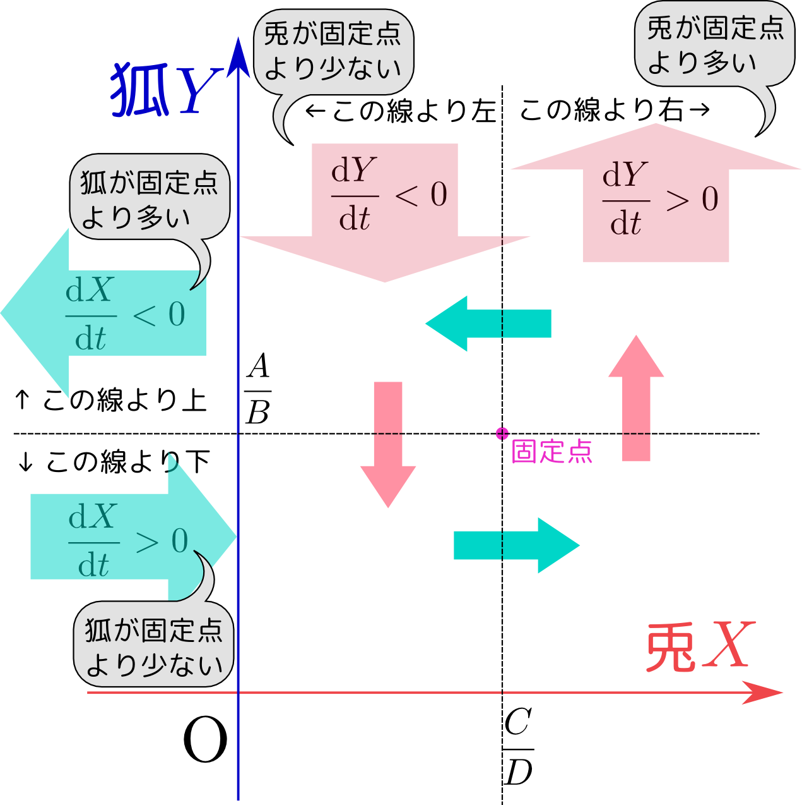

ある森の中で草食動物（兎）の数${X}$と肉食動物（狐）の数${Y}$がどう増減するかを考える。狐は兎を食べるので、兎は狐と出会うと死ぬと考えよう。森の中に${X}$匹の兎と${Y}$匹の狐がそれぞれ動きまわっている状況を考えると、両者が出会う確率は${X}$と${Y}$の積に比例するだろう。そして出会った後でやはりある確率で「狐が兎を食べる」というイベントが発生し、兎が減る。このように考えると、兎の減少量は${X}{Y}$という積に比例するだろう。兎は草食で、草はなくならないとすれば、狐に出会わなければ今いる量${X}$に比例して増える。よって、 \begin{equation} {\mathrm d{X}\over \mathrm dt}= A{X} -B{X}{Y} \end{equation} という式で増減するとする（$A,B$は比例定数）。
一方狐は、兎を食べないと生きていけないのだから、その増加はどれだけ兎を食べられるかによって決まり、それは${X}{Y}$に比例するのだったから、狐は${X}{Y}$に比例して増える。兎がいなかったら寿命が来て死ぬだけなので、それを$-C{Y}$という形で式に入れて \begin{equation} {\mathrm d{Y}\over \mathrm dt}= -C {Y} + D {X}{Y}\label{lwtwo} \end{equation} という微分方程式に従う（$C,D$は$A,B$とは別の比例定数である）。この方程式はこの式を出した二人の数学者の名前を取って「ロトカ・ヴォルテラの方程式」と呼ばれる。
時間変化を考えるには、${\mathrm d {X}\over \mathrm dt},{\mathrm d{Y}\over \mathrm dt}$に関する二つの微分方程式を連立させて解けばよい。いきなり解けと言われるとどうしていいのか悩んでしまうところだが、ここでまず、「${\mathrm d {X}\over \mathrm dt}={\mathrm d{Y}\over \mathrm dt}=0$となるのはどんなときか？」から考えるのがよい。${\mathrm d {X}\over \mathrm dt}={\mathrm d{Y}\over \mathrm dt}=0$となる点を「固定点」と呼ぶ。
固定点を求める方程式は上の微分方程式の右辺が$0$になる、という式で、因数分解すれば \begin{eqnarray} {X}(A-B{Y})&=&0\\ {Y}(-C+D{X})&=&0 \end{eqnarray} である。${X}={Y}=0$もこの方程式の解だが、「兎も狐もいない」という「つまらない解」最初から兎も狐もいないのだから、未来永劫いないままである。なので無視する。
${X}={C\over D},{Y}={A\over B}$が意味のある固定点である。
固定点からずれた時の${\mathrm d{X}\over\mathrm dt},{\mathrm d {Y}\over\mathrm dt}$の様子をグラフに表示すると

のようになる。これから${X}$-${Y}$平面内で反時計周りにぐるぐる回るような時間発展を行うということが予想される。
固定点からのずれを${x},{y}$とする。つまり、 \begin{equation} {X}= {C\over D}+{x},~~{Y}={A\over B}+{y} \end{equation} とする。こうして${x},{y}$の微分方程式を作ると、 \begin{equation} {\mathrm dx\over \mathrm dt}= -B \left({C\over D}+{x}\right) {y},~~~ {\mathrm dy \over \mathrm dt}= D\left({A\over B}+{y}\right){x} \end{equation} となる。ここで${x},{y}$は${C\over D},{A\over B}$に比べて小さいと考えて、括弧内の${x},{y}$は無視して、 \begin{equation} {\mathrm dx\over \mathrm dt}= -{BC\over D} {y},~~~ {\mathrm dy \over \mathrm dt}= {AD\over B} {x} \end{equation} と近似する。第一式を微分して \begin{equation} {\mathrm d^2 x\over \mathrm dt^2}= -{BC\over D} {\mathrm dy\over \mathrm dt} \end{equation} にしてから第二式を代入すると \begin{equation} {\mathrm d^2 x\over \mathrm dt^2}= -{BC\over D}\times{AD\over B}{x}=-{AC}{x} \end{equation} という、係数は違うが単振動と同じ式が}出てくる。
ここで求めたのは近似解なので、${X}$-${Y}$平面に描かれる図形は単純な楕円であるが、実際に微分方程式を解いてみると少々複雑な図形を描く。
X=
Y=